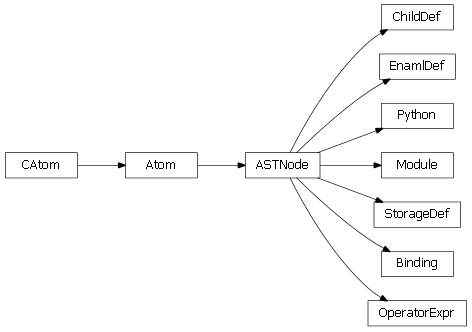

The enaml.core package contains all of Enaml’s core language functionality.
Bases: int
An int which represents an opcode - has a nicer repr.
list of weak references to the object (if defined)
Bases: list
A list for storing opcode tuples - has a nicer __str__.
list of weak references to the object (if defined)
Get the stack effect of an opcode, as a (pop, push) tuple.
If an arg is needed and is not given, a ValueError is raised. If op isn’t a simple opcode, that is, the flow doesn’t always continue to the next opcode, a ValueError is raised.
Bases: object
An object which holds all the information which a Python code object holds, but in an easy-to-play-with representation.
The attributes are:
Affecting action
code - list of 2-tuples: the code freevars - list of strings: the free vars of the code (those are names
of variables created in outer functions and used in the function)
args - list of strings: the arguments of the code varargs - boolean: Does args end with a ‘*args’ argument varkwargs - boolean: Does args end with a ‘**kwargs’ argument newlocals - boolean: Should a new local namespace be created.
(True in functions, False for module and exec code)
Not affecting action
name - string: the name of the code (co_name) filename - string: the file name of the code (co_filename) firstlineno - int: the first line number (co_firstlineno) docstring - string or None: the docstring (the first item of co_consts,
if it’s str or unicode)
code is a list of 2-tuples. The first item is an opcode, or SetLineno, or a Label instance. The second item is the argument, if applicable, or None. code can be a CodeList instance, which will produce nicer output when being printed.
list of weak references to the object (if defined)
Bases: object
A base class for implementing code tracers.
This class defines the interface for a code tracer object, which is an object which can be passed as the first argument to a code object which has been transformed to enable tracing. Methods on the tracer are called with relevant arguments from the Python stack when that particular code segment is executing. The return value of a tracer method is ignored; exceptions are propagated.
Called before the CALL_FUNCTION opcode is executed.
| Parameters: |
|---|
Note
The argstuple contains both positional and keyword argument information. argspec is an int which specifies how to parse the information. The lower 16bits of argspec are significant. The lowest 8 bits are the number of positional arguments which are the first n items in argtuple. The second 8 bits are the number of keyword arguments which follow the positional args in argtuple and alternate name -> value. argtuple can be parsed into a conventional tuple and dict with the following:
nargs = argspec & 0xFF args = argtuple[:nargs] kwargs = dict(zip(argtuple[nargs::2], argtuple[nargs+1::2]))
Bases: object
A base class for implementing code inverters.
This class defines the interface for a code inverter object, which is an object which can be passed as the first argument to a code object which has been transformed to enable inversion. The methods on the inverter are called with relevant arguments from the Python stack when that particular code segment is executing. The return values of a tracer method is ignored; exceptions are propagated.
The default behavior of an inverter is to raise. Implementations must provide their own code in order to enable inversion.
Called before the LOAD_NAME opcode is executed.
This method should perform a STORE_NAME operation.
| Parameters: |
|---|
Called before the LOAD_ATTR opcode is executed.
This method should perform a STORE_ATTR operation.
| Parameters: |
|---|
Inject tracing code into the given code list.
This will inject the bytecode operations required to trace the execution of the code using a CodeTracer object. The generated opcodes expect a fast local ‘_[tracer]’ to be available when the code is executed.
| Parameters: | codelist (list) – The list of byteplay code ops to modify. |
|---|---|
| Returns: | result (list) – A new list of code ops which implement the desired behavior. |
Inject inversion code into the given code list.
This will inject the bytecode operations required to invert the execution of the code using a CodeInverter object. The generated opcodes expect the fast local ‘_[inverter]’ and ‘_[value]’ to be available when the code is executed.
| Parameters: | codelist (list) – The list of byteplay code ops to modify. |
|---|---|
| Returns: | result (list) – A new list of code ops which implement the desired behavior. |
| Raises : |
The populate function for the Conditional class.
Bases: enaml.core.declarative.Declarative
A declarative object that represents conditional objects.
When the condition attribute is True, the conditional will create its child items and insert them into its parent; when False, the old items will be destroyed.
Creating a Conditional without a parent is a programming error.
The condition variable. If this is True, a copy of the children will be inserted into the parent. Otherwise, the old copies will be destroyed.
The list of items created by the conditional. This list should not be manipulated directly by user code.
Bases: atom.atom.Atom
The base class for Enaml construct nodes.
A construct node is an abstract representation of the tree described by an ‘enamldef’ block. Unlike the AST generated by the parser, this tree will contain resolved class objects and the other information needed to create an instance of the ‘enamldef’.
The parent of the construct tree node.
The line number which created the node.
Create an instance of the node from a dict.
Subclasses should reimplement this classmethod.
| Parameters: | dct (dict) – The serializable dictionary created by the Enaml compiler which represents the construction tree. |
|---|---|
| Returns: | result (ConstructNode) – The construct node for the given dict description. |
Bases: enaml.core.construct_nodes.ConstructNode
A construct node representing an ‘enamldef’ block.
The name of the file which holds enamldef definition.
The type name given to the enamldef.
The name of the base class which is being inherited.
The identifier given to the enamldef.
The docstring for the enamldef.
The list of storage def nodes for the enamldef.
The list of binding nodes for the enamldef.
The list of child def nodes for the enamldef.
The resolved base class for the enamldef object. This is updated during the resolution passes over the tree.
The created type class for the enamldef object. This is updated during the resolution passes over the tree.
The module globals for the enamldef. This is updated during the resolution passes over the tree.
The member to use for accessing the local scope of an instance. This is updated during the resolution passes over the tree.
The callable to invoke to populate an instance for the node. This is updated during the resolution passes over the tree.
Bases: enaml.core.construct_nodes.ConstructNode
A construct node for a storage definition.
The kind of the state definition.
The name of the state object being defined.
The typename of the allowed values for the state object.
The resolved type class for using with the state def. This is updated during the resolution passes over the tree.
Bases: enaml.core.construct_nodes.ConstructNode
A construct node for an attribute binding.
The name of the attribute being bound.
The operator symbol used in the enaml source.
The python code object to use for the binding.
The auxiliary code object for the binding. This may be None.
The function object created for ‘code’.
The function object created for ‘auxcode’.
The operator function to use to bind the code object. This is updated during the resolution passes over the tree.
Bases: enaml.core.construct_nodes.ConstructNode
A construct node for a child definition.
The type name of the child to create.
The identifier given to the child.
The list of state def nodes for the child.
The list of binding nodes for the child.
The list of child def nodes for the child.
The resolved type class for the child object. This is updated during the resolution passes over the tree.
The member to use for accessing the local scope of an instance. This is updated during the resolution passes over the tree.
The callable to invoke to populate an instance for the node. This is updated during the resolution passes over the tree.
Mark an Atom member as bindable from Enaml syntax.
| Parameters: |
|
|---|
The flag indicating that the Declarative object has been initialized.
Bases: enaml.core.object.Object
The most base class of the Enaml declarative objects.
This class provides the core functionality required of declarative Enaml types. It can be used directly in a declarative Enaml object tree to store and react to state changes. It has no concept of a visual representation; that functionality is added by subclasses.
alias of DeclarativeMeta
Export the ‘name’ attribute as a declarative member.
An event fired when an object is initialized. It is triggered once during the object lifetime, at the end of the initialize method.
A property which gets and sets the initialized flag. This should not be manipulated directly by user code.
Initialize this object all of its children recursively.
This is called to give the objects in the tree the opportunity to initialize additional state which depends upon the object tree being fully built. It is the responsibility of external code to call this method at the appropriate time. This will emit the initialized signal after all of the children have been initialized.
Bases: atom.atom.AtomMeta
The metaclass for declarative classes.
Get the populator function for the class.
Subclasses may declare a class method to override this and supply their own custom populate routine for instances.
Bases: object
An abstract interface definition for scope listeners.
A scope listener will be notified when an attribute is accessed via dynamic scoping.
alias of ABCMeta
Called after the scope dynamically loads an attribute.
| Parameters: |
|---|
list of weak references to the object (if defined)
Bases: object
A custom mapping object that implements Enaml’s dynamic scope.
The __getitem__ method of this object is called when LOAD_NAME opcode is encountered in a code object which has been transformed by the Enaml compiler chain.
Note
Strong references are kept to all objects passed to the constructor, so these scope objects should be created as needed and discarded in order to avoid unnecessary reference cycles.
Initialize a DynamicScope.
| Parameters: |
|
|---|
Lookup and return an item from the scope.
| Parameters: | name (string) – The name of the item to retrieve from the scope. |
|---|---|
| Raises : |
list of weak references to the object (if defined)
Bases: object
An object which implements userland dynamic scoping.
An instance of this object is made available with the nonlocals magic name in the scope of an expression.
Initialize a nonlocal scope.
| Parameters: |
|
|---|
Get a new nonlocals object for the given offset.
| Parameters: | level (int, optional) – The number of levels up the tree to offset. The default is zero and indicates no offset. The level must be >= 0. |
|---|
A convenience method which allows accessing items in the scope via getattr instead of getitem.
A convenience method which allows setting items in the scope via setattr instead of setitem.
Lookup and return an item from the nonlocals.
| Parameters: | name (string) – The name of the item to retrieve from the nonlocals. |
|---|---|
| Raises : |
Sets the value of the nonlocal.
| Parameters: | |
|---|---|
| Raises : |
list of weak references to the object (if defined)

Bases: atom.atom.Atom
The base class for Enaml ast nodes.
The line number in the .enaml file which generated the node.
Bases: enaml.core.enaml_ast.ASTNode
An ASTNode representing an Enaml module.
The list of ast nodes for the body of the module. This will be composed of Python and EnamlDef nodes.
Bases: enaml.core.enaml_ast.ASTNode
An ASTNode representing a chunk of pure Python code.
The python ast node for the given python code.
Bases: enaml.core.enaml_ast.ASTNode
An ASTNode representing an enamldef block.
The type name given to the enamldef.
The name of the base class which is being inherited.
The identifier given to the enamldef.
The docstring for the enamldef.
The list of decorator for the enamldef. This will be composed of Python nodes.
The list of body nodes for the enamldef. This will be composed of StorageDef, Binding, and ChildDef nodes.
Bases: enaml.core.enaml_ast.ASTNode
An ASTNode representing a child definition.
The type name of the child to create.
The identifier given to the child.
The list of body nodes for the child definition. This will be composed of StorageDef, Binding, and ChildDef nodes.
Bases: enaml.core.enaml_ast.ASTNode
An AST node which represents an operator expression.
The operator used to bind the code.
The python ast node for the bound python code.
Bases: enaml.core.enaml_ast.ASTNode
An AST node which represents a code binding.
The name of the attribute being bound.
The operator expression for the binding.
Bases: enaml.core.enaml_ast.ASTNode
An AST node for storage definitions.
The kind of the storage definition.
The name of the storage object being defined.
The typename of the allowed values for the storage object.
The default expression bound to the storage object. This may be None if the storage object has no default expr binding.
Returns a new code object with an updated first line number.
A code transformer which rewrites LOAD_GLOBAL opcodes.
This transform will replace the LOAD_GLOBAL opcodes with LOAD_NAME opcodes. The operation is performed in-place.
| Parameters: |
|
|---|
Optimize the given code object for fast locals access.
All STORE_NAME opcodes will be replaced with STORE_FAST. Names which are stored and then loaded via LOAD_NAME are rewritten to LOAD_FAST and DELETE_NAME is rewritten to DELETE_FAST. This transformation is applied in-place.
| Parameters: | codelist (list) – The list of byteplay code ops to modify. |
|---|
Compile an ast into a code object implementing operator =.
| Parameters: |
|
|---|---|
| Returns: | result (types.CodeType) – A Python code object which implements the desired behavior. |
Compile an ast into a code object implementing operator ::.
| Parameters: |
|
|---|---|
| Returns: | result (types.CodeType) – A Python code object which implements the desired behavior. |
Compile an ast into a code object implementing operator <<.
| Parameters: |
|
|---|---|
| Returns: | result (types.CodeType) – A Python code object which implements the desired behavior. |
Compile an ast into a code object implementing operator >>.
| Parameters: |
|
|---|---|
| Returns: | result (types.CodeType) – A Python code object which implements the desired behavior. |
Compile an ast into a code object implementing operator :=.
This will generate two code objects: one which is equivalent to operator << and another which is equivalent to >>.
| Parameters: |
|
|---|---|
| Returns: | result (tuple) – A 2-tuple of types.CodeType equivalent to operators << and >> respectively. |
Bases: enaml.core.enaml_compiler._NodeVisitor
A visitor which compiles an EnamlDef into a marshallable dict.
The main entry point of the EnamlDefCompiler.
This compiler compiles the given EnamlDef node into a dictionary which can be used to build out the component tree at run time.
| Parameters: |
|
|---|
Bases: enaml.core.enaml_compiler._NodeVisitor
A visitor that will compile an enaml module ast node.
The entry point is the compile classmethod which will compile the ast into an appropriate python code object for a module.
The main entry point of the compiler.
| Parameters: |
|
|---|---|
| Returns: | result (types.CodeType) – The code object for the compiled module. |
Bases: enaml.core.declarative_meta.DeclarativeMeta
The metaclass which creates types for the ‘enamldef’ keyword.
Bases: exceptions.Exception
A Sentinel exception type for declarative exceptions.
list of weak references to the object (if defined)
Bases: exceptions.NameError, enaml.core.exceptions.DeclarativeException
A NameError subclass which nicely formats the exception.
This class is intended for used by Declarative and its subclasses to report errors for failed global lookups when building out the object tree.
list of weak references to the object (if defined)
Bases: enaml.core.exceptions.DeclarativeException
A Exception subclass which nicely formats the exception.
This class is intended for use by the Enaml compiler machinery to indicate general errors when working with declarative types.
Bases: exceptions.LookupError, enaml.core.exceptions.DeclarativeException
A LookupError subclass which nicely formats the exception.
This class is intended for use by Enaml compiler machinery to report failures when looking up operators.
Initialize an OperatorLookupError.
| Parameters: |
|---|
list of weak references to the object (if defined)
Bases: tuple
EnamlFileInfo(src_path, cache_path, cache_dir)
Return self as a plain tuple. Used by copy and pickle.
Create new instance of EnamlFileInfo(src_path, cache_path, cache_dir)
Return a nicely formatted representation string
Alias for field number 2
Alias for field number 1
Alias for field number 0
Create an EnamlFileInfo object for the given src_path.
| Parameters: | src_path (string) – The full path to the .enaml file. |
|---|---|
| Returns: | result (FileInfo) – A properly populated EnamlFileInfo object. |
A backport of the Python 3’s abc.abstractclassmethod.
Bases: object
An abstract base class which defines the api required to implement an Enaml importer.
alias of ABCMeta
Finds the given Enaml module and returns an importer, or None if the module is not found.
Loads and returns the Python module for the given enaml path. If a module already exisist in sys.path, the existing module is reused, otherwise a new one is created.
Searches for the given Enaml module and returns an instance of AbstractEnamlImporter on success.
Paramters
| Returns: | result (Instance(AbstractEnamlImporter) or None) – If the Enaml module is located an instance of the importer that will perform the rest of the operations is returned. Otherwise, returns None. |
|---|
Loads and returns the code object for the Enaml module and the full path to the module for use as the __file__ attribute of the module.
| Returns: | result ((code, path)) – The Python code object for the .enaml module, and the full path to the module as a string. |
|---|
list of weak references to the object (if defined)
Bases: enaml.core.import_hooks.AbstractEnamlImporter
The standard Enaml importer which can import Enaml modules from standard locations on the python path and compile them appropriately to .enamlc files.
This importer adopts the Python 3 conventions and scheme for creating the cached files and setting the __file__ attribute on the module. See this discussion thread for more info: http://www.mail-archive.com/python-dev@python.org/msg45203.html
Searches for the given Enaml module and returns an instance of this class on success.
Paramters
| Returns: | results (Instance(AbstractEnamlImporter) or None) – If the Enaml module is located an instance of the importer that will perform the rest of the operations is returned. Otherwise, returns None. |
|---|
Bases: object
A context manager that hooks/unhooks the enaml meta path importer for the duration of the block. The helps user avoid unintended consequences of a having a meta path importer slow down all of their other imports.
Returns a tuple of currently active importers in use for the framework.
Add an importer to the list of importers for use with the framework. It must be a subclass of AbstractEnamlImporter. The most recently appended importer is used first. If the importer has already been added, this is a no-op. To move an importer up in precedence, remove it and add it again.
Removes the importer from the list of active importers. If the importer is not in the list, this is a no-op.
list of weak references to the object (if defined)
Bases: enaml.core.declarative.Declarative
An object which dynamically inserts children into its parent.
The ‘Include’ object is used to cleanly and easily insert objects into the children of its parent. ‘Object’ instances assigned to the ‘objects’ list of the ‘Include’ will be parented with the parent of the ‘Include’. Creating an ‘Include’ with no parent is a programming error.
The list of objects belonging to this Include. Objects in this list will be automatically parented with the Include’s parent.
A boolean flag indicating whether to destroy the old objects that are removed from the parent. The default is True.
The populate function for the Looper class.
Bases: enaml.core.declarative.Declarative
A declarative object that repeats its children over an iterable.
The children of a Looper are used as a template when creating new objects for each item in the given iterable. Each iteration of the loop will be given an indenpendent scope which is the union of the outer scope and any identifiers created during the iteration. This scope will also contain loop_index and loop_item variables which are the index and value of the iterable, respectively.
All items created by the looper will be added as children of the parent of the Looper. The Looper keeps ownership of all items it creates. When the iterable for the looper is changed, the looper will only create and destroy children for the items in the iterable which have changed.
Creating a Looper without a parent is a programming error.
The iterable to use when creating the items for the looper.
The list of items created by the conditional. Each item in the list represents one iteration of the loop and is a list of the items generated during that iteration. This list should not be manipulated directly by user code.
Get the populator function for the Looper class.
This returns a populator function which intercepts the creation of the child items and defers it until the initialization pass.
A flag indicated that an object has been destroyed.
A factory function which creates a flag accessor property.
Bases: atom.atom.Atom
The most base class of the Enaml object hierarchy.
An Enaml Object provides supports parent-children relationships and provides methods for navigating, searching, and destroying the tree.
An optional name to give to this object to assist in finding it in the tree (see . the ‘find’ method. There is no guarantee of uniqueness for an object name. It is left to the developer to choose an appropriate name.
The read-only property which returns the object parent. This will be an Object or None. Use ‘set_parent()’ or pass the parent to the constructor to set the parent of an object.
A read-only property which returns the object children. This is a list of Object instances. User code should not modify the list directly. Instead, use ‘set_parent()’ or ‘insert_children()’.
A property which gets and sets the destroyed flag. This should not be manipulated directly by user code.
An event fired when an object has been destroyed. It is triggered once during the object lifetime, just before the object is removed from the tree structure.
Initialize an Object.
| Parameters: | parent (Object or None, optional) – The Object instance which is the parent of this object, or None if the object has no parent. Defaults to None. |
|---|
Destroy this object and all of its children recursively.
This will emit the destroyed event before any change to the object tree is made. After this returns, the object should be considered invalid and should no longer be used.
Set the parent for this object.
If the parent is not None, the child will be appended to the end of the parent’s children. If the parent is already the parent of this object, then this method is a no-op. If this object already has a parent, then it will be properly reparented.
| Parameters: | parent (Object or None) – The Object instance to use for the parent, or None if this object should be unparented. |
|---|
Note
It is the responsibility of the caller to initialize and activate the object as needed, if it is reparented dynamically at runtime.
Insert children into this object at the given location.
The children will be automatically parented and inserted into the object’s children. If any children are already children of this object, then they will be moved appropriately.
| Parameters: |
|
|---|
Note
It is the responsibility of the caller to initialize and activate the object as needed, if it is reparented dynamically at runtime.
A method invoked when the parent of the object changes.
This method is called when the parent on the object has changed, but before the children of the new parent have been updated. Sublasses may reimplement this method as required.
| Parameters: |
|
|---|
A method invoked when a child is added to the object.
Sublasses may reimplement this method as required.
| Parameters: | child (Object) – The child added to this object. |
|---|
A method invoked when a child is removed from the object.
Sublasses may reimplement this method as required.
| Parameters: | child (Object) – The child removed from the object. |
|---|
Get the root object for this hierarchy.
| Returns: | result (Object) – The top-most object in the hierarchy to which this object belongs. |
|---|
Yield all of the objects in the tree, from this object down.
| Parameters: | depth_first (bool, optional) – If True, yield the nodes in depth first order. If False, yield the nodes in breadth first order. Defaults to False. |
|---|
Yield all of the objects in the tree, from this object up.
| Parameters: | root (Object, optional) – The object at which to stop traversal. Defaults to None. |
|---|
Find the first object in the subtree with the given name.
This method will traverse the tree of objects, breadth first, from this object downward, looking for an object with the given name. The first object with the given name is returned, or None if no object is found with the given name.
| Parameters: |
|
|---|---|
| Returns: | result (Object or None) – The first object found with the given name, or None if no object is found with the given name. |
Find all objects in the subtree with the given name.
This method will traverse the tree of objects, breadth first, from this object downward, looking for a objects with the given name. All of the objects with the given name are returned as a list.
| Parameters: |
|
|---|---|
| Returns: | result (list of Object) – The list of objects found with the given name, or an empty list if no objects are found with the given name. |
Bases: object
The base class of the standard Enaml operator implementations.
Initialize an OperatorBase.
| Parameters: | binding (BindingConstruct) – The construct node for the operator binding. |
|---|
Get the local scope for this operator and owner.
| Parameters: | owner (Declarative) – The declarative object of interest. |
|---|
Release any resources held for the given owner.
This method is called by a declarative object when it is being destroyed. It releases the strong reference the owner may have to the local scope. Subclasses should reimplement this method if more control is needed.
| Parameters: | owner (Declarative) – The declarative object being destroyed. |
|---|
Bases: enaml.core.operators.OperatorBase
An operator class which implements the = operator semantics.
Bases: object
A backwards compatibility object.
This object implements the magic ‘event’ scope object on the rhs of a ‘::’ operator. That object is deprecated and this object will raise a deprecation warning when it is used.
Bases: enaml.core.operators.OperatorBase
An operator class which implements the :: operator semantics.
Bases: enaml.core.operators.OperatorBase
An operator class which implements the >> operator semantics.
Bases: object
An observer used to listen for changes in “<<” expressions.
Instances of this class are created and managed by the OpSubscribe class when the operator is evaluated and traced.
Initialize a SubscriptionObserver.
| Parameters: |
|
|---|
Bases: enaml.core.operators.OperatorBase
An operator class which implements the << operator semantics.
Bases: enaml.core.operators.OpSubscribe
An operator class which implements the := operator semantics.
Assert binding points to a valid declarative member.
| Parameters: |
|
|---|---|
| Returns: | result (tuple) – A 2-tuple of (name, member) on which the binding should operate. |
| Raises : |
Bind a readable operator for the binding to the given klass.
| Parameters: |
|---|
Bind a writable operator for the binding to the given klass.
| Parameters: |
|
|---|
Add a member to the class named ‘__op_storage__’.
This member will be added as needed, and can be used to store instance specific data needed by the operators. The value of the storage will be a sortedmap.
The default Enaml operator function for the = operator.
The default Enaml operator function for the :: operator.
The default Enaml operator function for the >> operator.
The default Enaml operator function for the << operator.
Bases: object
A fake token used to store the lexer before calling the syntax error functions.
list of weak references to the object (if defined)
Recursively sets the context of the node to the given context which should be Store or Del. If the node is not one of the allowed types for the context, an erro is raised with an appropriate message.
If the testlist is a list, returns an ast.Tuple with a Load context, otherwise returns the orginal node.
Validates that its possible for the compiler to generated inversion code for the given ast node.
Currently, code is invertable if the expression terminates with a node of the following types: Name, Attribute, Call, Subscript.
| Parameters: |
|---|
Bases: object
A parsing helper to delineate a comma separated list.
list of weak references to the object (if defined)
Bases: object
A parsing helper to delineate a generator body.
list of weak references to the object (if defined)
Bases: object
A parsing helper object to delineate call arguments.
list of weak references to the object (if defined)
enaml : enaml_module NEWLINE ENDMARKER | enaml_module ENDMARKER
enaml_module_body : enaml_module_body enaml_module_item
enamldef : ENAMLDEF NAME LPAR NAME RPAR COLON enamldef_body
enamldef : ENAMLDEF NAME LPAR NAME RPAR COLON PASS NEWLINE
enamldef : ENAMLDEF NAME LPAR NAME RPAR COLON NAME COLON enamldef_body
enamldef : ENAMLDEF NAME LPAR NAME RPAR COLON NAME COLON PASS NEWLINE
enamldef_body : NEWLINE INDENT enamldef_body_items DEDENT
enamldef_body : NEWLINE INDENT STRING NEWLINE enamldef_body_items DEDENT
enamldef_body : NEWLINE INDENT identifier enamldef_body_items DEDENT
enamldef_body : NEWLINE INDENT STRING NEWLINE identifier DEDENT
enamldef_body : NEWLINE INDENT STRING NEWLINE identifier enamldef_body_items DEDENT
enamldef_body_items : enamldef_body_items enamldef_body_item
child_def : NAME COLON NAME COLON binding | NAME COLON NAME COLON storage_def
child_def_body : NEWLINE INDENT child_def_body_items DEDENT
child_def_body : NEWLINE INDENT identifier child_def_body_items DEDENT
child_def_body_items : child_def_body_items child_def_body_item
operator_expr : EQUAL test NEWLINE | LEFTSHIFT test NEWLINE
operator_expr : COLONEQUAL test NEWLINE | RIGHTSHIFT test NEWLINE
small_stmt_list : small_stmt small_stmt_list_list SEMI
small_stmt_list_list : small_stmt_list_list SEMI small_stmt
small_stmt : expr_stmt | print_stmt | del_stmt | pass_stmt | flow_stmt | import_stmt | global_stmt | exec_stmt | assert_stmt
flow_stmt : break_stmt | continue_stmt | return_stmt | raise_stmt | yield_stmt
expr_stmt : testlist augassign testlist | testlist augassign yield_expr
augassign : AMPEREQUAL | CIRCUMFLEXEQUAL | DOUBLESLASHEQUAL | DOUBLESTAREQUAL | LEFTSHIFTEQUAL | MINUSEQUAL | PERCENTEQUAL | PLUSEQUAL | RIGHTSHIFTEQUAL | SLASHEQUAL | STAREQUAL | VBAREQUAL
equal_list : EQUAL testlist equal_list | EQUAL yield_expr equal_list
compound_stmt : if_stmt | while_stmt | for_stmt | try_stmt | with_stmt | funcdef | classdef | decorated
for_stmt : FOR exprlist IN testlist COLON suite ELSE COLON suite
try_stmt : TRY COLON suite except_clauses ELSE COLON suite
try_stmt : TRY COLON suite except_clauses FINALLY COLON suite
try_stmt : TRY COLON suite except_clauses ELSE COLON suite FINALLY COLON suite
except_clause : EXCEPT test AS test COLON suite | EXCEPT test COMMA test COLON suite
import_from : FROM dotted_name IMPORT LPAR import_as_names RPAR
import_from : FROM import_from_dots dotted_name IMPORT STAR
import_from : FROM import_from_dots dotted_name IMPORT import_as_name
import_from : FROM import_from_dots dotted_name IMPORT LPAR import_as_names RPAR
import_from : FROM import_from_dots IMPORT import_as_names
import_from : FROM import_from_dots IMPORT LPAR import_as_names RPAR
import_as_names : import_as_name import_as_names_list
import_as_names : import_as_name import_as_names_list COMMA
import_as_names_list : import_as_names_list COMMA import_as_name
dotted_as_names : dotted_as_name dotted_as_names_list
dotted_as_names_list : dotted_as_names_list COMMA dotted_as_name
testlist_comp_list : testlist_comp_list COMMA test
subscriptlist_list : subscriptlist_list COMMA subscript
dictorsetmaker : test COLON test dosm_colon_list COMMA
dosm_colon_list : dosm_colon_list COMMA test COLON test
arglist : STAR test COMMA arglist_list argument COMMA DOUBLESTAR test
testlist_safe_list : testlist_safe_list COMMA old_test
varargslist : fpdef COMMA STAR NAME COMMA DOUBLESTAR NAME
varargslist : fpdef varargslist_list COMMA STAR NAME COMMA DOUBLESTAR NAME
varargslist : fpdef varargslist_list COMMA DOUBLESTAR NAME
varargslist : fpdef EQUAL test COMMA STAR NAME COMMA DOUBLESTAR NAME
varargslist : fpdef EQUAL test varargslist_list COMMA STAR NAME
varargslist : fpdef EQUAL test varargslist_list COMMA STAR NAME COMMA DOUBLESTAR NAME
varargslist : fpdef EQUAL test varargslist_list COMMA DOUBLESTAR NAME
Bases: object
An object which resolves the global symbols in a construct tree.
This single public entry point for this class is the ‘resolve(...)’ classmethod.
Resolve the symbols and definitions for the tree.
Changes to the tree are performed in-place.
| Parameters: |
|
|---|
list of weak references to the object (if defined)
Bases: enaml.core.code_tracing.CodeInverter
The standard code inverter for Enaml expressions.
Initialize a StandardInverter.
| Parameters: | nonlocals (Nonlocals) – The nonlocal scope for the executing expression. |
|---|
Called before the LOAD_NAME opcode is executed.
This method performs STORE_NAME by storing to the nonlocals. See also: CodeInverter.load_name.
Called before the LOAD_ATTR opcode is executed.
This method performs STORE_ATTR via the builtin setattr. See also: CodeInverter.load_attr.
Bases: enaml.core.code_tracing.CodeTracer
A CodeTracer for tracing expressions which use Atom.
This tracer maintains a running set of traced_items which are the (obj, name) pairs of atom items discovered during tracing.
Called when an object attribute is dynamically loaded.
This will trace the object if it is an Atom instance. See also: AbstractScopeListener.dynamic_load.